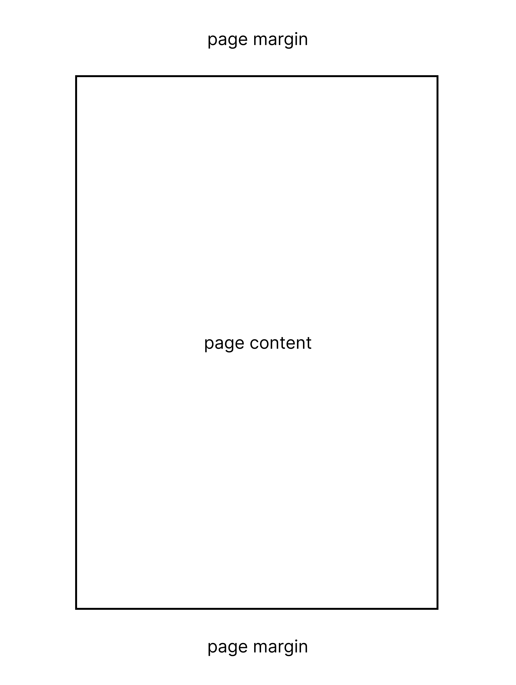
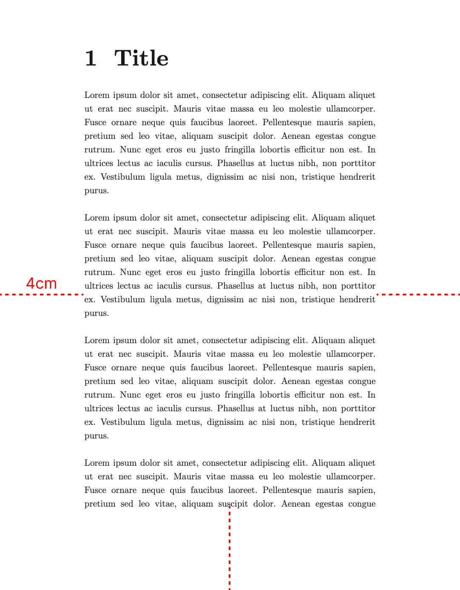
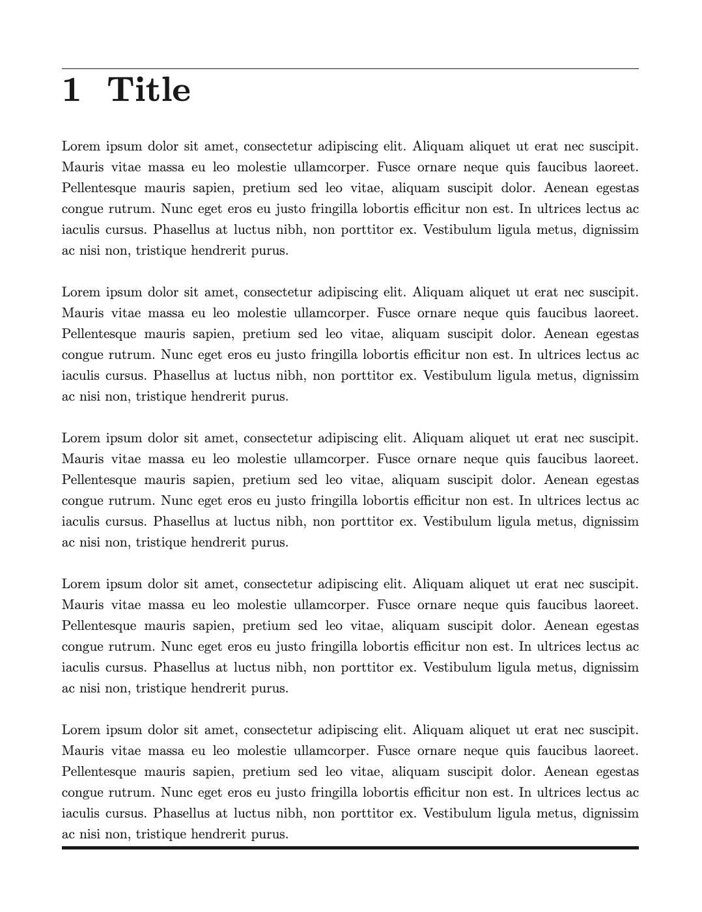
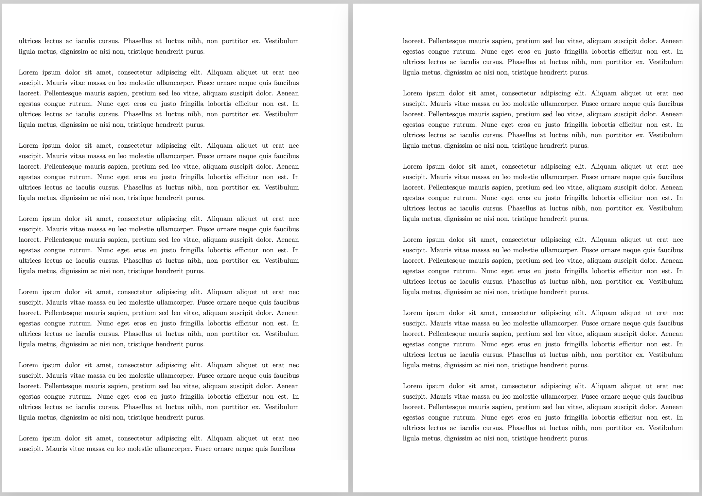

/

On this page
Page format
The .pageformat docs ↗ function configures the page format. All its parameters are optional, and if left unset, they delegate their default value to the underlying renderer depending on the document type.
Multiple calls to .pageformat are layered on top of each other, with later calls overriding earlier ones.
| Parameter | Description | Accepts | Supported documents |
|---|---|---|---|
side | Restricts the format to left (verso) or right (recto) pages only. See Scoped formatting. | left, right | paged |
pages | Restricts the format to specific pages by 1-based inclusive range. See Scoped formatting. Combinable with side. | Range, e.g. 2..5 | paged |
size | Name of the paper format. | A0..A10, B0..B5, letter, legal, ledger | paged, slides |
width | Page width. If size is set too, this value overrides its width. | Size, e.g. 300px, 15cm, 5.8in | plain, paged, slides, docs |
height | Page height. If size is set too, this value overrides its height. | Size, e.g. 300px, 15cm, 5.8in | paged, slides |
orientation | Whether width and height of the paper format (size) should be swapped. This defaults to portrait for plain and paged documents and to landscape for slides. | portrait, landscape | paged, slides |
margin | Blank space between page borders and content area. | Sizes, e.g. 1cm, 15mm 30px, 2in 1in 3in 2in | plain, paged, slides |
bordertop, borderright, borderbottom, borderleft | Thickness of the border at each side of the content area. | Size | plain, paged, slides |
bordercolor | Color of the border around the content area. | Color | plain, paged, slides |
background | Background color of each page. | Color | plain, paged, slides, docs |
columns | Number of columns in each page. If set to 2 or higher, the document has a multi-column layout. | Positive integer | plain, paged, slides |
alignment | Horizontal content and text alignment. | start (default in slides), center, end, justify (default in plain and paged) | plain, paged, slides, docs |
Content area
Each page consists of a content area in which the main content is displayed, and a margin area, a blank outline that may host page margin content such as page counters.

Margins
The margin parameter affects the size of the margin area, reducing the surface of the content area.
Example 1
.pageformat margin:{4cm}
Borders
The bordertop, borderright, borderbottom, borderleft, and bordercolor parameters allow customization of borders around the content area of each page in paged and slides documents.
- If you specify at least one side, the border applies to the specified sides. If you do not specify the color, it uses the default foreground text color.
- If you do not specify any side but do specify the color, the border applies to all sides with a default thickness.
Example 2
.pageformat bordertop:{1px} borderbottom:{4px}
Scoped formatting
In paged documents, the side and pages parameters restrict a format to specific pages.
Per-side formatting
The side parameter restricts a format to left (verso) or right (recto) pages only. This is useful, for example, for mirrored margins in book-style layouts.
Example 3
.pageformat size:{A4}
.pageformat side:{left} margin:{2cm 3cm 2cm 1cm}
.pageformat side:{right} margin:{2cm 1cm 2cm 3cm}
Per-range formatting
The pages parameter restricts a format to an inclusive range of page indices, starting from 1. This is useful, for example, for applying distinct styles to the first few pages of a document.
.pageformat pages:{2..5} margin:{3cm}side and pages can also be combined to target specific sides within a range:
.pageformat side:{left} pages:{1..3} bordercolor:{green}